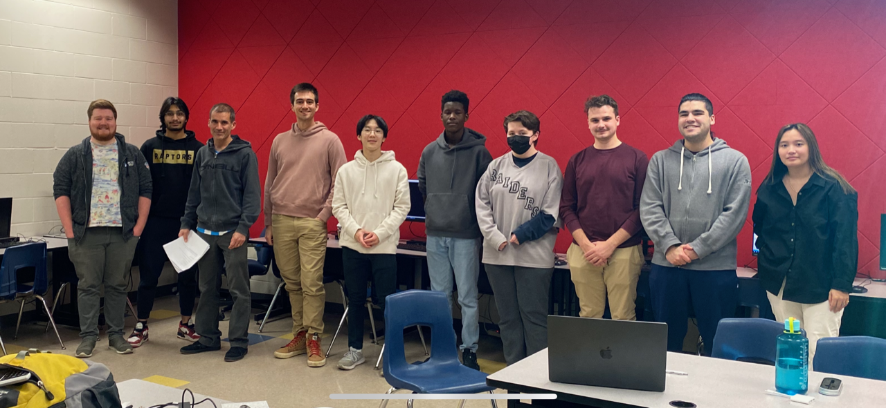

For over a decade I trained and took students to compete in the ECOO Computer Programming Contests ECOOCS and I saw the many educational, developmental, social and ultimately professional benefits that the experience gave students I started my own contest when the ECOO stopped running theirs. My colleague John Swain at Bayridge Secondary in Kinston also started running his own contest and together we are rebuilding the collaborative, competitive coding experience for our students. If any computer science teachers are interested in running a contest of their own, feel free to email me and I'll share any outlines that may be helpful and if you are in Ontario We can coordinate contest dates so that kids can attend multiple contests.

Alumni Contest, varous alumni working with (and competing with) current coding team members, a Christmas Tradition